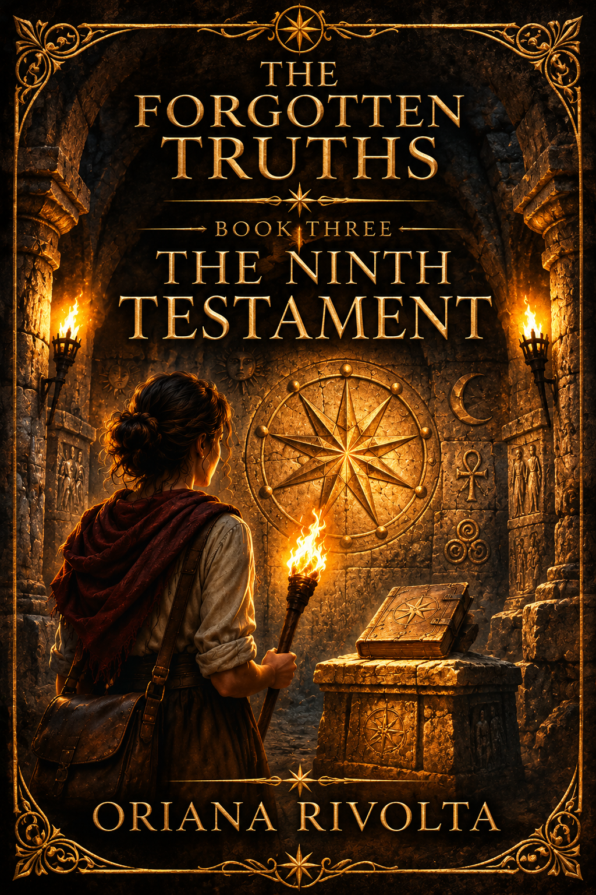
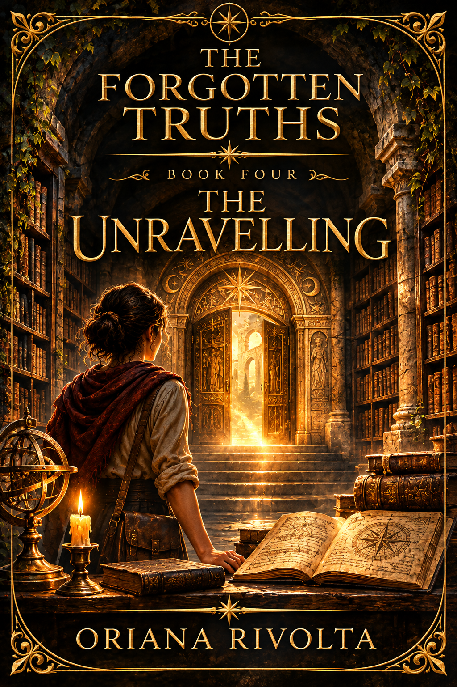

BOOK TWO
The Forgotten Witnesses
The mystery continues through voices and records that history almost left behind.
ForthcomingTHE COLLECTION
Every book is another thread. Every thread leads closer to a forgotten truth.
THE FOUR-BOOK HISTORICAL MYSTERY
Some secrets survive centuries.
The Forgotten Truths is a four-book historical mystery series following Lucia Rossi into a world of hidden histories, forgotten witnesses and questions that reach far beyond a single lifetime.

THE FORGOTTEN TRUTHS · BOOK ONE
BOOK ONE · PUBLISHED
In a city of beautiful architecture, ancient institutions and carefully guarded histories, Lucia Rossi finds herself drawn into a mystery woven through generations of forgotten records.
What begins as a discovery threatens to expose questions that others may have preferred to leave unanswered.
The first instalment in the four-book Forgotten Truths series.
Published on Amazon. Official purchase links will be added as the listings become available.
THE STORY CONTINUES
Three further novels will complete The Forgotten Truths series.
BOOK TWO
The mystery continues through voices and records that history almost left behind.
Forthcoming
BOOK THREE
Deeper discoveries lead towards questions about ancient knowledge and what may have been forgotten.
Forthcoming
BOOK FOUR
The concluding novel. The threads come together, and the story reaches its final reckoning.
Forthcoming